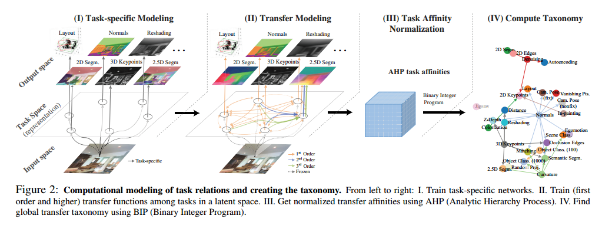
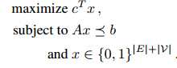
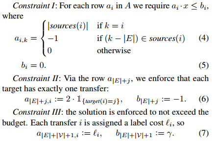
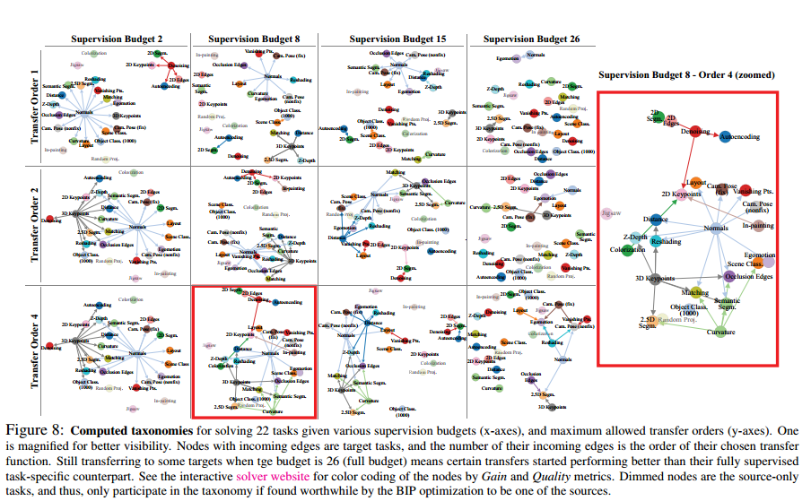
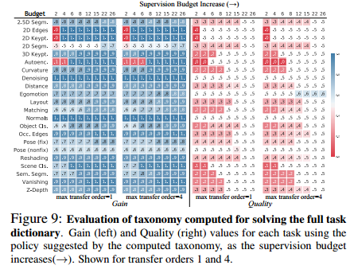
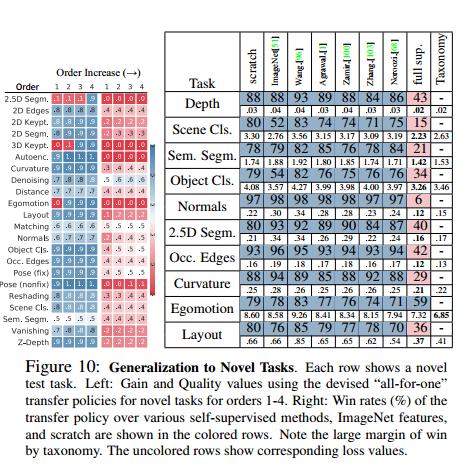

CVPR 2018 best paper : Taskonomy 论文学习总结
当前，计算机视觉在细分领域似乎已经无孔不入， 每一个小的领域，都有人做了十分充足的研究。但是，少有人关注各个不同的视觉任务之间的联系，不同视觉任务是否具有一定的联系呢？他们之间是否是毫不相关的呢？作者在这个方面做出了一定的探索，尽管采用的方法十分朴素，但是完整地完成了量化视觉任务之间的联系的任务，并根据其成果确定了一种训练方式，得到了很好的效果。同时，作者提供了一个数量十分巨大的数据集，这是难能可贵的。
概要
视觉任务之间是否具有联系？例如，能否通过计算发现来得到图的深度信息？种种迹象，例如迁移学习，乐观的显示这种联系是存在的。并且，视觉任务之间的联系具有极为珍贵的价值：通过重用相关的有监督训练结果，以及少量的额外数据，有效降低在单个视觉任务系统的复杂度。
作者提出了一种完全量化的方法，用来对视觉任务空间结构建立模型。通过找出视觉任务之间的“迁移学习依赖性”，构建一个用于迁移学习的量化“taxonomic”图，从而减少了对于有标签数据量的需求。作者提供了一系列的公寓，用于计算和探索taxonomical structure， 以在不同的数据集上指定高效的监督学习策略。
方法
在前馈神经网络中， 每一层能够成功地将输入转化成更加抽象的表示，从而将输入的原始数据映射成为输出。然而，这些抽象的表示(representations)，对其余的任务(输出)十分有帮助，如果他们之间存在联系的话。
这就是作者方法的出发点：基于不同任务之间对(读出)彼此预先训练好的抽象表示的有效利用程度，构造关联矩阵。通过BIP(Binary Integer Programming)方程从中提取处全局的迁移策略(训练策略)。
由于这种方法是完全通过计算并且以中间表示为基础，他避免了在任务空间上提出先验假设。这一点极为重要，因为先验假设通常来源于人类的知识和推导，但是神经网络并不工作在同样的准则之下。
定义
$ \cal T = \{t_1, … , t_n\} $ ：需要最优化训练效果的任务集合
$ \cal S = \{s_1, … , s_n \} $ ：可以训练的任务集合
$ \gamma $ ：有限的监督清预算(出于经济、可计算性、时间限制的约束)
$ \cal V=\cal T \bigcup \cal S $ : 任务词典
$ \cal T - \cal T \bigcap \cal S $ : 需要解决但无法训练的任务
$ \cal S - \cal T \bigcap \cal S $ : 并不关心但是可能能够用于提高目标任务的表现的任务集合
$ taskonomy $ : 描述任务之间可迁移性的有向图，一组源任务与一个目标任务之间的有向边代表了一个迁移方案，其权重表示其迁移表现
基于监督预算、选中的任务、迁移次序和迁移方程的可表示性，Taxonomy可计算出一系列的优化迁移策略。
Taxonomy通过四个步骤完成。
- 为$\cal S$中的每个任务训练一个神经网络
- 训练源任务和目标任务之间所有可行的迁移方式，包括多个任务对一个任务的迁移(higher-order 迁移)
- 通过迁移方法的表现获取关联矩阵，并正则化
- 构建超图，用于判定任一迁移策略的表现并对最好的策略进行优化
任务词典：
选取了尽可能覆盖所有视觉领域的26个任务。重要的是，这个任务词典应该被视为一个从一个所有视觉任务构成的密集的样本空间中抽样出的样本集，而非一个详尽的任务列表。抽样使得可以稀疏的对一个稠密的空间进行建模，并且目标是，泛化出任务词典中不存在的视觉任务。样本选取得越好，那么泛化能力越强
数据集：
为了比较任务本身的能力，而不受不同数据集输入的影响，作者建造了一个数据集，其中每一张图片都为任务词典中的每一个任务进行了合适的标注。
Step 1: Task-Specific Modeling
对$\cal S$中的所有任务进行有针对性的监督训练。每个视觉任务的有监督网络都具有一个编码-解码架构，编码器规模足以提取出强有力的抽象表示，而解码器则有能力根据编码结果提取出需要的结果。通常解码器规模远小于编码器。
Step 2: Transfer Modeling
迁移网络通过学习一个读出结构(readout function)来完成迁移，具体为：源任务s对图像$ I $ 进行编码，获得$E_s(I)$，而迁移网络则训练出能够根据将$E_s(I)$解码为目标任务$t$所需要结果的解码器。通过最优化损失进行训练：
$f_t(I)$是图片$I$相对于任务t的ground truth。
$E_s(I)$可能不足以有效地解决任务t(仅依赖s与t之间的联系)，所以$D_{s\rightarrow t}$能够作为计算关联度的重要依据。
Accessibility
如果源任务和目标任务之间的迁移是成功的，那么就说他们之间具有信息的可达性(information accessible)。因此，如果两个任务之间具有高度的accessibility，那么我们就可以根据少量数据训练出一个小规模的迁移结构，就能够很好的完成迁移任务。
Higher-Order Transfers
多个源任务对一个目标任务进行迁移，迁移网络接受多个不同任务的抽象表示。
为避免组合爆炸的现象($| \cal T | \times C_{|\cal S|}^k$)，采用了beam search方法：
在$k \leq 5$的情况，选取5个表现最好的源任务，遍历全部组合情况($c_5^k$)；
在$k > 5$的情况，选取k个最好的k，进行beam size为1的beam search。
beam search
算法思想： 在广度优先搜索基础上引入启发函数的感念，估计从当前结点到目标节点的损失，从而达到对搜索空间的优化(剪枝)，从而达到防止程序内存溢出，加快搜索速度的作用
数据结构：
- BEAM：保存下一轮扩展的结点，size可调
- SET：保存BEAN中所有的后续结点，是启发函数的输入空间
- hash table：保存所有已访问过的结点
算法步骤：
- 将开始结点增加到BEAM和hash table
- 循环遍历BEAM所有后续结点，增加到SET中，并清空BEAM
- 从SET中选择B个启发函数值最优的结点增加到BEAM以及hash table中，已在hash table中的结点不需要增加
- 循环以上过程，直到找到目标节点或hash table满或主循环结束beam为空(没有找到解)
伪代码：
1 | /* initialization */ |
不足：相对与广度优先搜索，失去了必定能够找到解的性质
参考链接：
Transitive Transfers
作者尝试了任务传递迁移$(s\rightarrow t_! \rightarrow t_2)$， 但效果并不显著，所以放弃。
Step 3: Ordinal Normalization using Analytic Hierarchy Process
不同任务之间的损失具有差异极大的规模以及具有不同的维度(值域)，因此，合理的正则化十分必要。
作者尝试了简单的线性正则化，失败，因为任务的loss与表现并不构成线性关系(0.01的loss并不代表表现两倍好于0.02的loss)。
随后作者使用了基于序数的规范化(ordinal approach)，仅假设了损失是单调变化的。
该方法基于运筹学中的AHP(Analytic Hierarchy Process)。概括来说，关联矩阵中的第$(i,j)$个值为利用第i个起始任务迁移后，其网络由多大几率表现好于第j个网络(即i对于j的胜率)。
对于每个目标任务t，构建pairwise tournament矩阵$W_t$, 纵轴和横轴均对应所有的起始任务以及计算过的高阶组合。给定一个测试集$D_{test}$， $W_t$的$(i, j)$项为$s_i$在测试集的所有图片输入中有多大几率表现好于$s_j$，即测试集中损失较小的比例。随后将$W_t$的值规范化到[0.001,0.999]，计算$W_t^{‘} = W_t / W_t^T$, $W_{i,j}^{‘}$代表$s_i$的表现好于$s_j$几倍，即：
将其规范化成为数值和为1的矩阵之后， 作者将$s_i$相对于$t$的关联性定义为$W_t^{‘’}$的第i项principal eigenvector。将全部目标任务的$W_t^{‘’}$合并，获得最终的关联矩阵P、
Step 4: Computing the Clobal Taxonomy
基于affinity matrix 求得如何最有效地学习一组感兴趣的任务。将其抽象成一个subgraph selection问题：
选择一些任务从零学习，剩下的任务用少量数据进行迁移学习，具体的迁移学习策略由subgraoh中的edge决定。
对于一条有向边，起始点代表从零学习的一个任务，重点代表要进行迁移的目标任务。基于此，通过解BIP最优化问题得到最优解：

包含三个限制条件：
- 如果选择了一个迁移，那么迁移的起始任务和目标任务均要出现在subgraph之中
- 每个目标任务有且仅有一个迁移(从零学习定义为从自己到自己的迁移，即一条自己到自己的边)
- 不超过监督预算
数学表达：

随后，作者通过解最优subgraph selection问题获得了最有效的迁移学习策略

实验结果
Taskonomy训练了3000多个神经网络，总耗时约50000小时的GPU运算时间，从零学习消耗120k图片，迁移学习消耗16k图片。
解决一组任务
衡量解决一组任务的有效性：
- 迁移获利(Gain)：基于少量数据，迁移学习相较于从零学习的胜率
- 迁移质量(Quality)：用少量数据迁移学习相较于用大量数据从零学习的胜率
下图是Taskonomy的迁移获利 (左) 和质量 (右) 的图表。两图的纵轴为所有目标任务，横轴为监督预算，胜率在0-1之间。可见，对于一个26个任务的目标集，在只有一半甚至1／3的监督预算时，Taskonomy 计算出的监督分配会使整体表现远远打败从零学习（迁移获利），并近似于（胜率超过40%）大量数据完全监督学习（迁移质量）。

解决新任务
对于解决新任务，我们可以把我们任务词典里的目标任务当作一个新任务，模拟只有少量数据的情况。实验结果如下，可以发现Taskonomy的表现超过了现有的行业pretrained features（包括imagenet fc7）。

总结
在Taskonomy项目里，作者的目标是着眼于一组任务，并利用任务之间的关联性减少总体数据使用量。为此，走着量化了视觉任务的关联性，并基于求得的affinity matrix最优化得到如何分配任务监督数据量。实验表明，视觉任务之间确实存在很强的关联性，能通过更少的数据很好地解决一组任务。